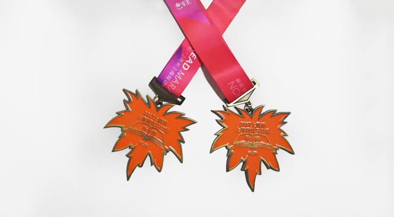

发现真实的自我
——17年上海阅读马拉松读书有感
上海阅读马拉松结束已经有一个多月了，阅读书目《每一种人生都值得为之梦想》，说实话，这种书我并不喜欢阅读，但其中有一句话“世间令人分心的事太多，所以很可能终其一生都发现不了真实的自我，很多人都是如此。”让我印象深刻、感触良多且由衷认可。
世间令人分心的事确实太多，比如这句话如醍醐灌顶让我认清自己的现状，想要静心写一篇深刻的反思小文，却因这样那样的小事分心，一直耽搁，直到最近几天，我都快忘了这句话和这句话对我的警醒。【罪过罪过】
反观最近几年，我好像努力、刻苦、上进、严于律己，对知识孜孜以求，渴望能力上能够不断提升，但实际上一无所成，几近原地踏步。仔细想想，付出那么多精力为何都像打了水漂一样不见踪影，归根到底还是因为分心，致使每一件事都没有投入足够的精力。
分心总是太容易找到借口。我发现身体并没有并没有自己想的那么强壮，甚至还偏弱，让我做很多事都力不从心，给我的生活和工作带来很多负面影响。为此，我曾多次下决心去跑步，锻炼身体，但总是因为各种原因无法坚持。比如，我风风火火跑了三天，第四天却下雨了；雨停了又跑，还没坚持一个星期，又赶上连续加班；等再接上计划跑步已经不知道过去多少天了。再次下决心跑步，依然会因为各种事分心，比如身体不舒服，比如朋友聚餐，比如又有了重要的事。总之会不断冒出来一些事干扰我的计划，让我分心，难以坚持跑步计划。
分心为什么那么容易找到借口呢？可能是因为对自己太过宠溺，可能是因为想做的事太多，也可能是心里太多重要的事了。
宠爱自己可能是最天经地义的事了。“生活艰难，自己不对自己好还指望谁对自己好”、“人就应该对自己好一点”、“开心最重要”，这些话早已广泛流传，而且成为宠爱自己、放纵自己最有说服力的理由。自己舒服才重要，自己高兴才是王道。像今天累了，让自己休息一下；今天太乏了，早点睡吧；今天不开心，吃点好的安慰一下自己；今天太高兴了，要庆祝一下······这些好像都理所当然、无法挑剔，但这些都会让人分心，让原本的计划无法实施。
一直以来兴趣广泛都是一个优秀的特质。职业求索中这也是一个漂亮的加分项，这就更加重了兴趣广泛的分量。广泛的兴趣固然好，但人们会不会忘了人的精力有限？我就常常忘了。
我从小就喜欢练字，特别是钢笔字帖。因为写字能让人在烦躁的时候平静下来，能让空虚的时间变充实，最重要的是，字如果写的漂亮，那是会很骄傲的！我喜欢打羽毛球，因为打球蹦蹦跳跳出一身汗，酣畅淋漓；我还对兵乓求难念不忘，因为大学体育学的就是兵乓球，学的很多技巧不想荒废，想有机会能大显身手；我还想学唱歌，还想学乐器······但实际上我现在一无所长，字写的丑不说，买的一堆字帖只是占地方。羽毛球几个月打不一次，兵乓球拍买来压根没用过。就连我自觉有天分又喜爱的手工都好久没做了。
现在想来，我还真是花心，喜欢的东西那么多，却没有一样能认真喜欢，没有专注于一件事。
可是有时候即使严于律己，依然会被许多事分心，无法专注于已经计划好的事。总是有“重要事”不得不去应付。比如加班，比如同事聚餐，比如同学聚会。加班是任何一个职场人都不能拒绝的吧！而同事聚餐，说是私下活动，但也是职场活动，是几乎不能拒绝的。即使有不得已的理由不去参加，过后也会是一个像错过全世界一样的缺失。职场无奈，朋友相处也不轻松，也要活跃参与，不然就很可能成为别人口中不合群的人。我曾经因拒绝跟朋友一起斗地主，被贴上冷酷、孤傲、不合群的标签。这让我一度很苦恼。我能怎么办，我也很无奈，谁让我就是讨厌扑克牌。
我活着，努力着，做着各种喜欢的事和重要的事，可是我越来越觉得自己碌碌无为。我一直很苦恼，不知道问题出在哪里。直到我看到这本书的这句话
"世间令人分心的事太多，很可能终其一生都发现不了 真实的自我"
是的，没错。生活中让我分心的事太多了，让我无法专注于一件事，更无法做好一件事。
必须要改变了，不然我将继续碌碌无为，苦恼无助。
我决定以后以小目标的方式去做事。对，生活艰难，那就先定一个小目标，然后去实现它，然后再定一个小目标······
首先，为以后的每一年确定一个主题，再相应的制定具体的计划，要具体，可量化，可考核。
其次，我不能太花心了，不能这也想做，那也喜欢。删减兴趣爱好，只保留一到两个；删减心里的重要事，一段时间内只做一件重要事。
再有，严于律己，不仅要克制自己的欲望和懒惰，还要加强用于拒绝的自制力，强化自我意识。
最后，制定灵活的的补偿方案和奖惩措施，让自己更灵活的实现目标。
一眨眼，一年又快过完了，崭新的18年即将开始，那就从现在开始，从18年开始，用一种新的方式去生活。
诚邀各位朋友监督，和我一起努力！
18
赞
18
查看
18
留言

最新留言
访客20170202
12:12
麻雀和乌鸦一起摆龙门阵。 麻雀说:你是啥子鸟哦? 乌鸦说:我是凤凰噻! 麻雀:哪有你龟儿子这么黑的凤凰哦?
访客20170202
12:12
麻雀和乌鸦一起摆龙门阵。 麻雀说:你是啥子鸟哦? 乌鸦说:我是凤凰噻! 麻雀:哪有你龟儿子这么黑的凤凰哦?